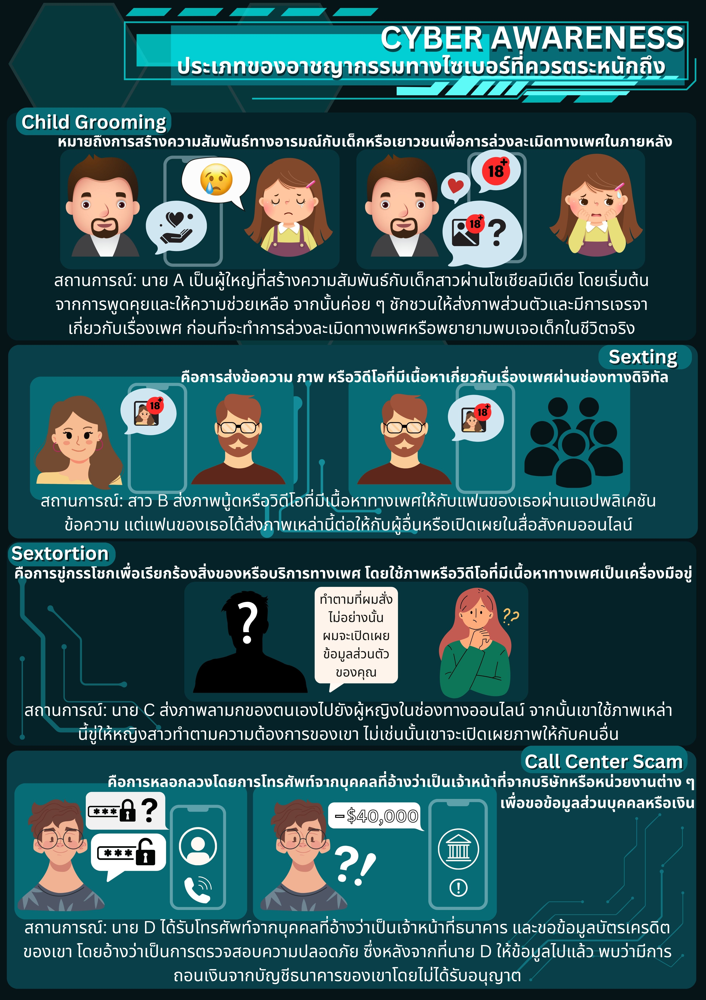
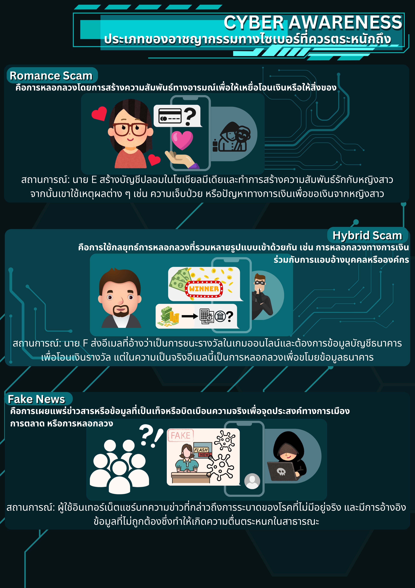

การประกอบอาชญากรรมทาง Cyber Awareness
การประกอบอาชญากรรมทาง Cyber Awareness
ในยุคที่เทคโนโลยีและการสื่อสารผ่านโลกออนไลน์เข้ามามีบทบาทสำคัญในชีวิตประจำวัน ปัญหาอาชญากรรมทางไซเบอร์จึงกลายเป็นความท้าทายที่ทุกคนต้องตระหนัก อาชญากรรมเหล่านี้ไม่ได้เพียงสร้างความเสียหายทางทรัพย์สินหรือข้อมูล แต่ยังมีผลกระทบรุนแรงต่อจิตใจ ความสัมพันธ์ และความปลอดภัยส่วนบุคคล การเข้าใจถึงรูปแบบต่าง ๆ ของอาชญากรรมทางไซเบอร์ เช่น การหลอกลวง ล่วงละเมิด หรือการเผยแพร่ข้อมูลเท็จ เป็นสิ่งสำคัญเพื่อช่วยให้สามารถป้องกันตนเอง ครอบครัว และสังคมโดยรวม
ตัวอย่างประเภทของอาชญากรรมทางไซเบอร์
1. Child Grooming (การล่อลวงเยาวชน)
Child Grooming คือการสร้างความสัมพันธ์และความเชื่อใจเพื่อหลอกลวงเด็กและเยาวชนให้ตกเป็นเหยื่อของการล่วงละเมิดทางเพศ อาชญากรจะเริ่มต้นด้วยการสร้างความสนิทสนมผ่านช่องทางออนไลน์ เช่น โซเชียลมีเดีย หรือเกมออนไลน์ จากนั้นจะพยายามนำเด็กไปสู่สถานการณ์ที่ไม่ปลอดภัย เช่น การส่งข้อมูลส่วนตัว ภาพถ่าย หรือแม้กระทั่งนัดพบ
ตัวอย่างสถานการณ์
เด็กชายวัย 12 ปีได้รับข้อความจากบุคคลที่แอบอ้างว่าเป็นเด็กในวัยเดียวกัน พวกเขาคุยกันเรื่องเกมและเรื่องสนุกในโรงเรียน ก่อนที่อีกฝ่ายจะเริ่มขอภาพถ่ายส่วนตัวและพยายามนัดพบในสถานที่ลับ
• • •
2. Sexting (การส่งข้อความหรือภาพที่เกี่ยวข้องกับเพศ)
Sexting หมายถึงการส่งข้อความ รูปภาพ หรือวิดีโอที่เกี่ยวข้องกับเรื่องเพศระหว่างบุคคล อาชญากรหรือแม้แต่คนรู้จักสามารถนำเนื้อหาเหล่านี้ไปใช้ข่มขู่ หรือเผยแพร่ในที่สาธารณะ สร้างความอับอายและส่งผลกระทบต่อชีวิตเหยื่อ
ตัวอย่างสถานการณ์
หญิงสาวอายุ 18 ปีส่งรูปส่วนตัวให้แฟนของเธอผ่านแอปพลิเคชันแชท เมื่อความสัมพันธ์สิ้นสุดลง แฟนของเธอได้ใช้รูปนั้นข่มขู่เพื่อเรียกร้องผลประโยชน์ หรือเผยแพร่รูปในโซเชียลมีเดีย
• • •
3. Sextortion (การข่มขู่ด้วยเนื้อหาทางเพศ)
Sextortion เป็นการข่มขู่โดยใช้อินเทอร์เน็ตเพื่อเรียกร้องผลประโยชน์ เช่น เงิน หรือการให้ความร่วมมือในลักษณะที่ไม่พึงประสงค์ โดยใช้เนื้อหาทางเพศที่ได้จากเหยื่อมาเป็นเครื่องมือในการข่มขู่
ตัวอย่างสถานการณ์
ชายหนุ่มอายุ 25 ปีได้รับการติดต่อจากผู้หญิงที่อ้างว่าเป็นนางแบบออนไลน์ เธอชักชวนให้เขาเปิดกล้องและส่งภาพส่วนตัว จากนั้นกลับถูกข่มขู่ว่าจะเผยแพร่ภาพเหล่านั้นหากเขาไม่จ่ายเงินตามที่เรียกร้อง
• • •
4. Call Center Scam (การหลอกลวงผ่านศูนย์บริการปลอม)
Call Center Scam เป็นการหลอกลวงโดยใช้อุบายจากการแอบอ้างว่าเป็นเจ้าหน้าที่ของหน่วยงาน เช่น ธนาคาร หรือบริษัทที่น่าเชื่อถือ เพื่อขอข้อมูลส่วนบุคคล เช่น บัญชีธนาคาร หรือขอให้โอนเงิน
ตัวอย่างสถานการณ์
ชายสูงวัยวัย 60 ปีได้รับสายจากบุคคลที่อ้างว่าเป็นเจ้าหน้าที่ธนาคาร แจ้งว่าเขามีหนี้ค้างชำระและต้องโอนเงินด่วนเพื่อหลีกเลี่ยงค่าปรับ เมื่อเขาโอนเงินแล้วจึงทราบว่าเป็นการหลอกลวง
• • •
5. Romance Scam (การหลอกลวงผ่านความรัก)
Romance Scam คือการหลอกลวงที่เริ่มจากการสร้างความสัมพันธ์รักหรือมิตรภาพผ่านโลกออนไลน์ โดยมีเป้าหมายเพื่อหลอกเอาเงินหรือสิ่งของมีค่า อาชญากรมักใช้เวลาสร้างความเชื่อใจและหาโอกาสเหมาะในการหลอกลวงเหยื่อ
ตัวอย่างสถานการณ์
หญิงวัยทำงานอายุ 35 ปี ได้พบกับชายหนุ่มผ่านแอปหาคู่ พวกเขาคุยกันหลายเดือนจนเธอไว้วางใจ ก่อนที่เขาจะขอให้เธอช่วยโอนเงินเพื่อช่วยเหลือค่าเดินทางหรือการรักษาพยาบาลที่เขาอ้างว่าเกิดขึ้น
• • •
6. Hybrid Scam (การหลอกลวงแบบผสมผสาน)
Hybrid Scam เป็นการหลอกลวงที่รวมหลายรูปแบบเข้าด้วยกัน เช่น การหลอกลวงทางการเงินร่วมกับการแอบอ้างบุคคลหรือองค์กรที่น่าเชื่อถือ
ตัวอย่างสถานการณ์
เหยื่อได้รับอีเมลที่อ้างว่าเป็นบริษัทจัดส่งพัสดุ แจ้งว่ามีสินค้าติดอยู่ที่ศุลกากรและต้องชำระค่าธรรมเนียมก่อน แต่เมื่อเหยื่อโอนเงินไปแล้ว กลับพบว่าไม่มีพัสดุดังกล่าวจริง
• • •
7. Fake News (ข่าวปลอม)
การเผยแพร่ข่าวปลอมหมายถึงการปล่อยข้อมูลหรือข่าวที่ไม่เป็นความจริงในโลกออนไลน์ เพื่อหวังผลประโยชน์ เช่น การสร้างกระแส การปลุกปั่นทางการเมือง หรือการสร้างความเข้าใจผิด
ตัวอย่างสถานการณ์
ข่าวปลอมเรื่องผลิตภัณฑ์เสริมอาหารที่อ้างว่าสามารถรักษาโรคร้ายแรงได้ถูกเผยแพร่ในโซเชียลมีเดีย ส่งผลให้ผู้คนหลงเชื่อและซื้อผลิตภัณฑ์โดยไม่ปรึกษาแพทย์
• • •
อาชญากรรมทางไซเบอร์เป็นภัยคุกคามที่ทุกคนควรตระหนัก เนื่องจากสามารถเกิดขึ้นได้กับทุกเพศทุกวัย การศึกษาวิธีการป้องกันและระมัดระวังในการใช้งานเทคโนโลยี เช่น การไม่ส่งข้อมูลส่วนตัวให้ผู้อื่น การตรวจสอบข้อมูลก่อนเชื่อ และการใช้งานช่องทางออนไลน์อย่างระมัดระวัง จะช่วยลดความเสี่ยงจากการตกเป็นเหยื่อ และสร้างสังคมออนไลน์ที่ปลอดภัยมากยิ่งขึ้น

